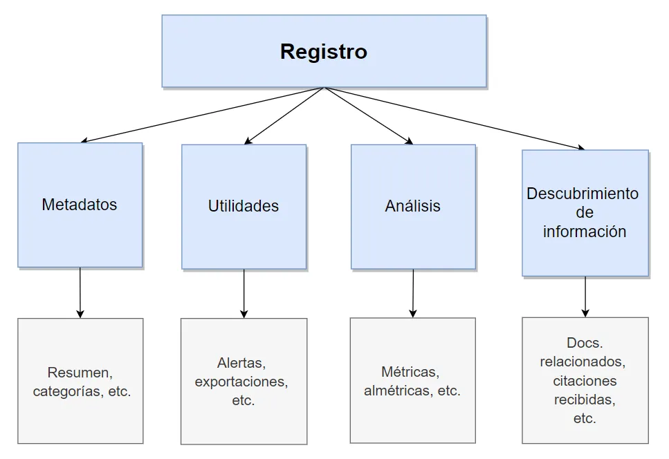

2.2 Estructura de Registros
¿Qué son los registros del CPU?
Se emplean para controlar las instrucciones en ejecución, manejar direccionamiento de memoria y propiciar la capacidad aritmética. Los registros vienen de tres tipos: datos, direcciones e índice, que tiene lugar en casi todos los aspectos de la operación del CPU. El tamaño de un registro depende del CPU; los más simples tienen registros que aceptan 8 o 16 bits de datos y los más complejos tienen registros de 32, 48 o 64 bits.
Registro de datos: Un CPU puede funcionar con datos en uno de tres modos: entre dos registros, entre registros y una ubicación de Memoria de acceso al azar (RAM - Random-Access Memory) y entre dos ubicaciones RAM. Como el CPU está conectado directamente a los registros, las operaciones que implican dos registros son las más rápidas; las que se dan entre ubicaciones RAM son las más lentas. Es decir, junta dos registros, añade un registro a una ubicación RAM, o añade dos ubicaciones RAM.
Registro de direcciones: Para que un CPU pueda almacenar y recuperar datos en RAM, debe tener la dirección de la memoria de la información. Esas operaciones que implican RAM usan registros de dirección de memoria. EL CPU no realiza aritmética en estos registros; en cambio, los usa para ubicar datos que necesita.
Registro de índice: Un CPU no puede hacer matemáticas en registros de datos, aunque puede hacerlo indirectamente con un registro de índice. éste trabaja con los registros de datos, permitiendo a un programa procesar hilos de información eficazmente.
Registros de segmento: Un registro de segmento tiene 16 bits de longitud y facilita un área de memoria para direccionamiento conocida como segmento actual.
Registro Cs: el dos almacena la dirección inicial del segmento de código de un programa en el registro CS. Indica la dirección de una instrucción que es buscada para su ejecución.
Registro Ds: genera una referencia a la localidad de un byte específico en el segmento de datos.
Registro SS: permite la colocación en memoria de una pila, para almacenamiento temporal de dirección y datos.
Registro ES: se utiliza para algunas operaciones con cadenas de caracteres se utiliza para el manejo de direccionamiento de memoria.
